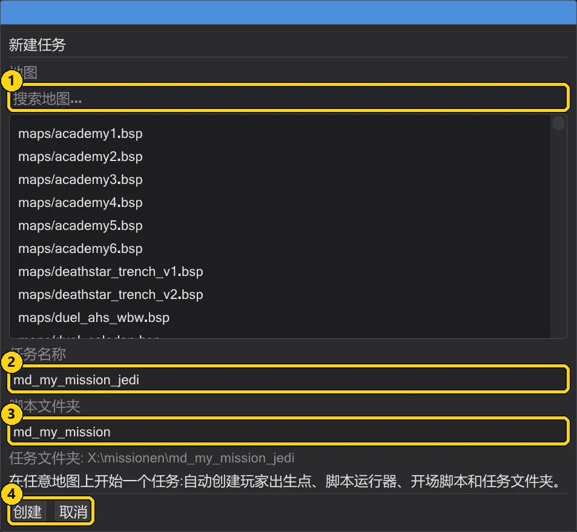
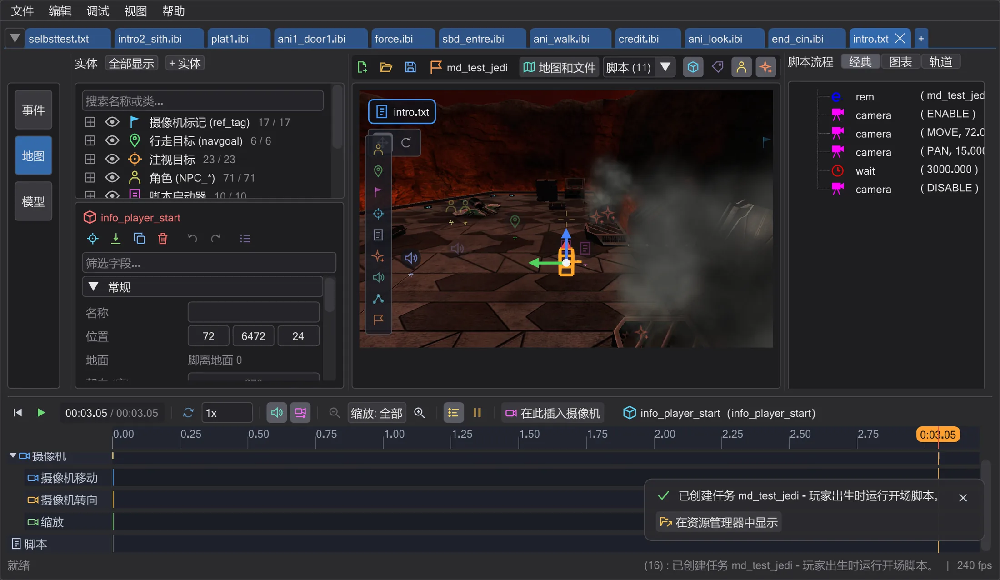
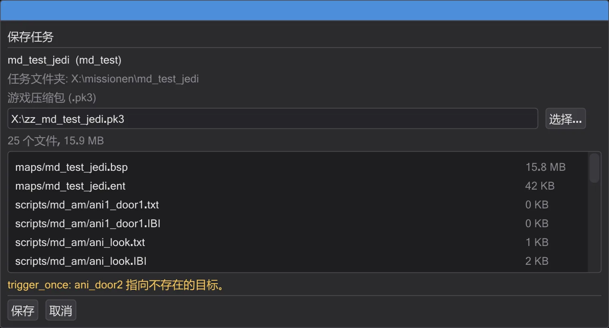
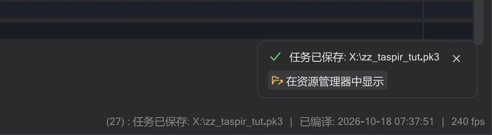

教程
你自己的任务
从一张空地图到游戏可加载的任务:创建任务、添加开场、检查并打包成 .pk3。
步骤#
- 1
创建任务。 在 任务 标签页按 新建任务(或起始页面上的卡片)。选择地图,输入名称(例如
md_test_jedi),按 创建。
新建任务对话框。 - 2
查看生成的内容。 已放置玩家出生点、脚本启动器和开场脚本;开场脚本在一个标签页中打开。任务名称显示在地图工具栏中。

新建的任务。 - 4
打开保存任务。 按 保存任务。对话框列出将放入压缩包的每个文件,并检查任务。

保存前的检查。 - 5
修正红色项目后保存。 错误必须修正(例如实体使用了但不存在的脚本);警告可以保留。保存 会把
zz_md_test_jedi.pk3写入游戏文件夹。
已保存——消息显示保存位置。 - 6
开始游玩。 启动游戏,打开控制台并输入
devmap md_test_jedi。下次可用 文件 → 最近的任务 重新打开整个项目。
最近列表中的任务。